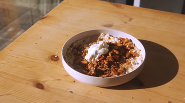

Oatmeal

Budget and Tasty oatmeal version, ideal for hungry students!
Oatmeal full of your favourite ingredients like : apples, cinnamon and
honey!
ingredients
- 60g oats
- An apple
- yogurt
- cinnamon
- honey
Instructions
- Cut the apple in half and grate one half in an empty bow
- Add 2 table spoons of yogurt, cinnamon on taste and stir together
- Add the oats, mix well and let it soak for 5 to 10 minutes
- chop the rest of the apple on little cubes
-
toast 20g of oats, the apple cubes in a pan, add some cinnamon on top
and mix the ingredients together. Keep doing it for about a minute
-
Spread the soaked oats in a bow, add the ingredients from the pan on top
of it, add a bit of yogurt if you feel like it and a drizzle of honey
- Enjoy your dish :)!